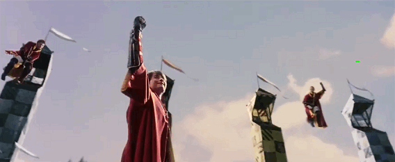
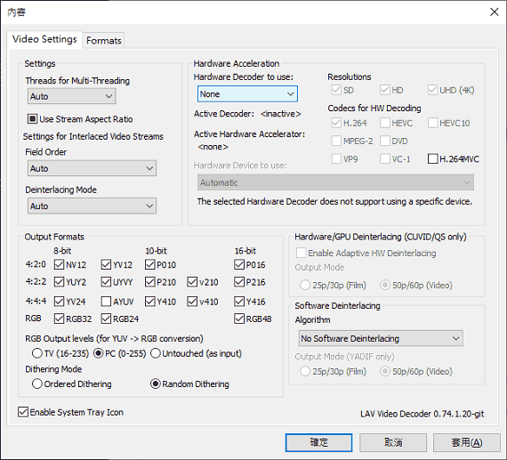

安裝編碼包後影片出現綠影
問題
無論安裝 K-Lite Codec Pack 或 STANDARD/ADVANCED Codecs 之類的編碼包，看影片有時會出現綠影：

解法
Step 1:
執行編碼包隨附的 Codec Tweak Tool 程式。
Step 2:
按 DirectShow Filters 鈕。
Step 3:
按 LAV Video decoder。
Step 4:
按 Hardware Decoder to use 底下的下拉式清單，改成 DXVA2 (native) 或 None 或 NVIDIA CUVID[1]，即可解決問題。
